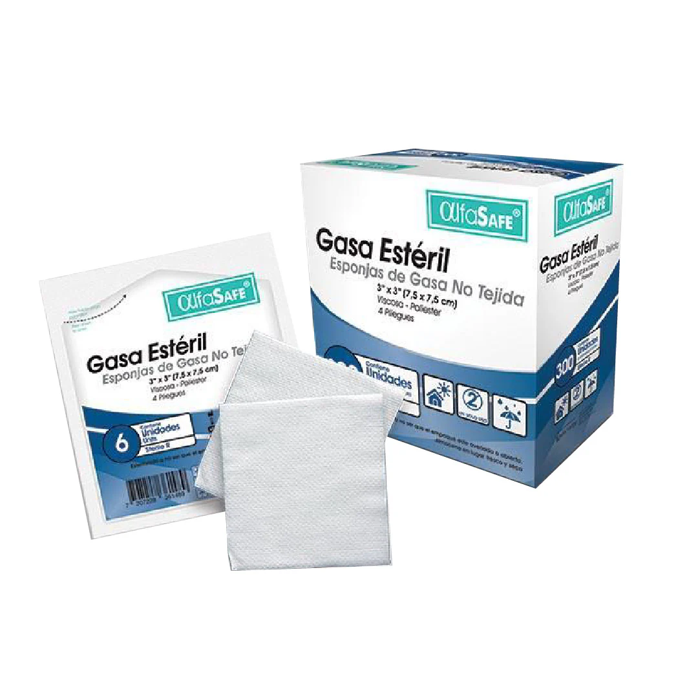
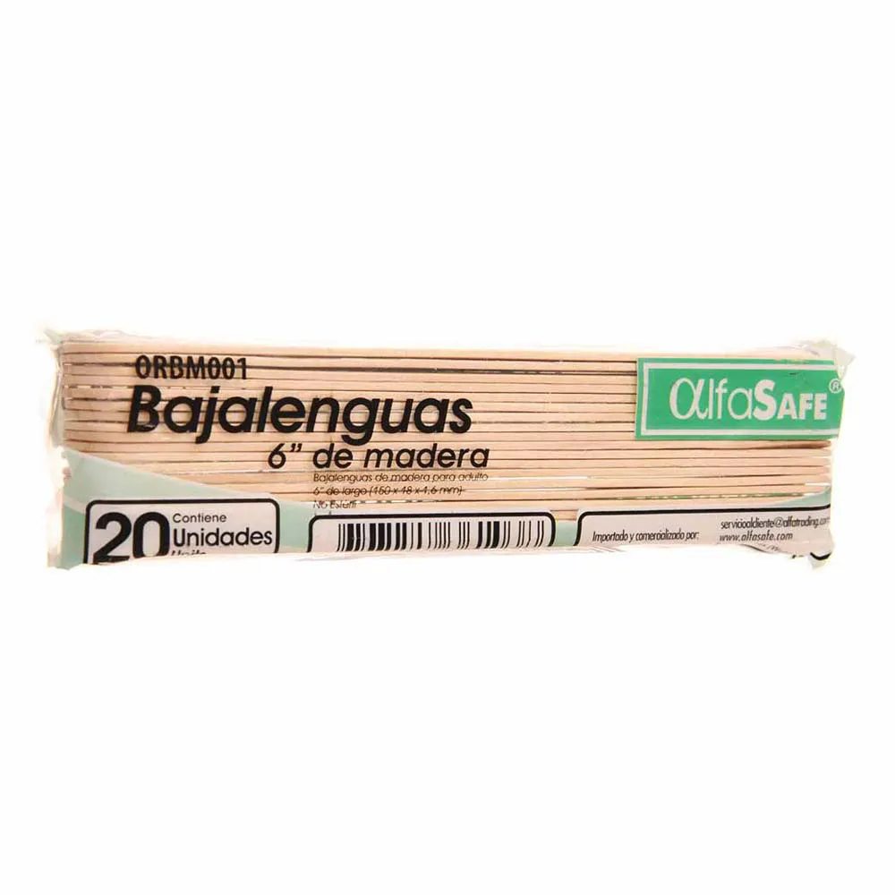
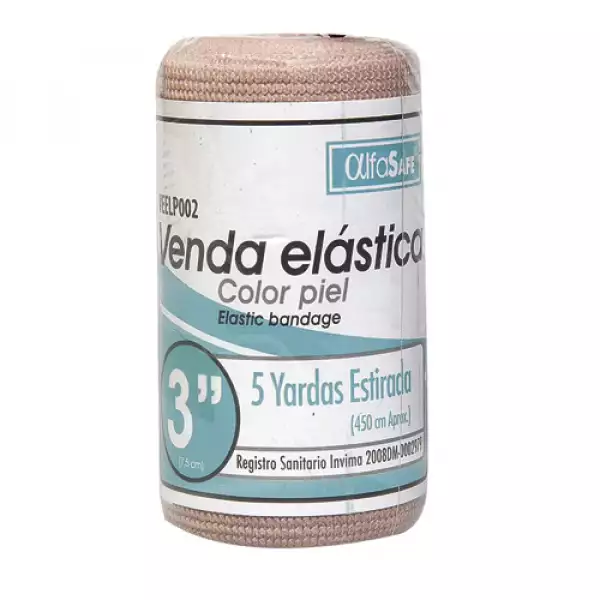
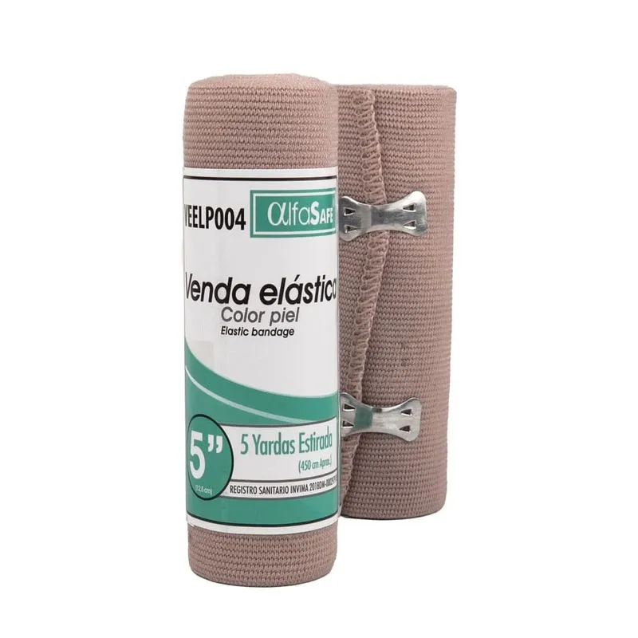
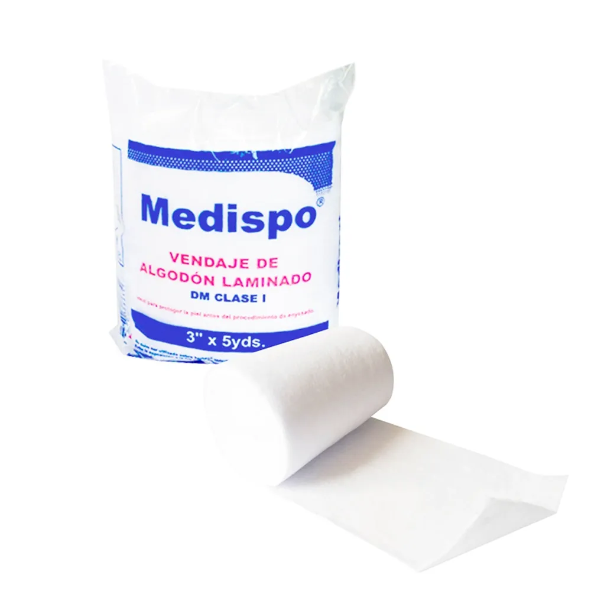
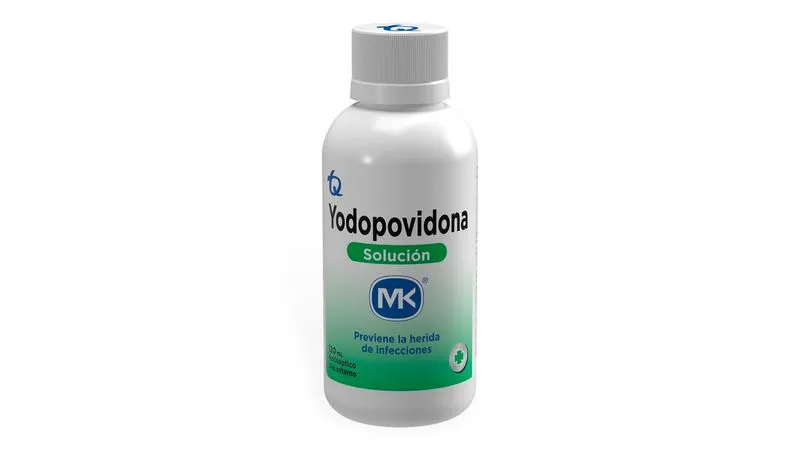
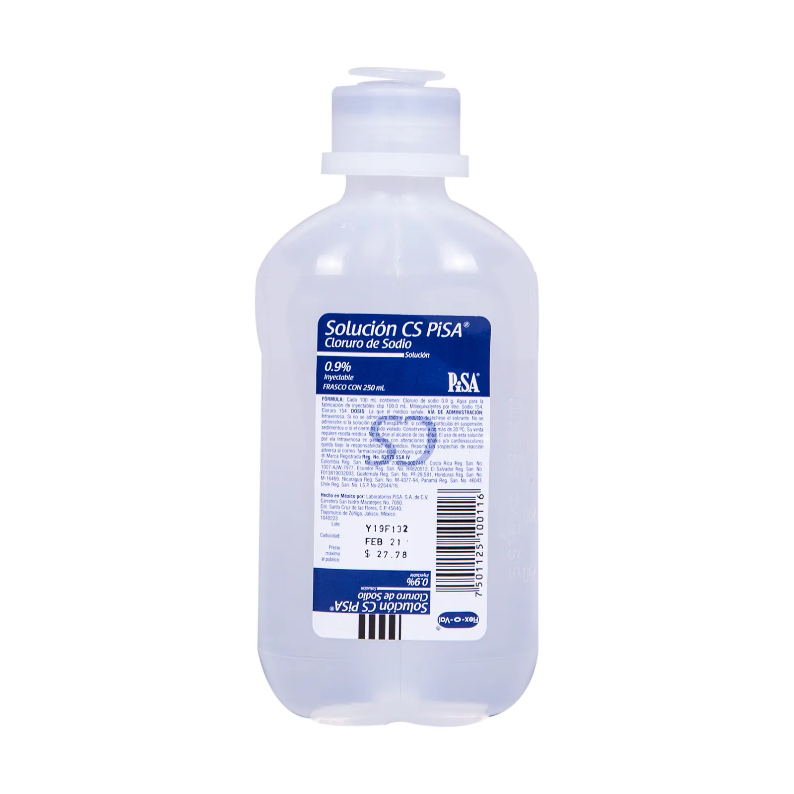
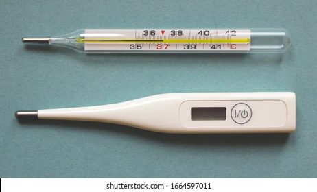
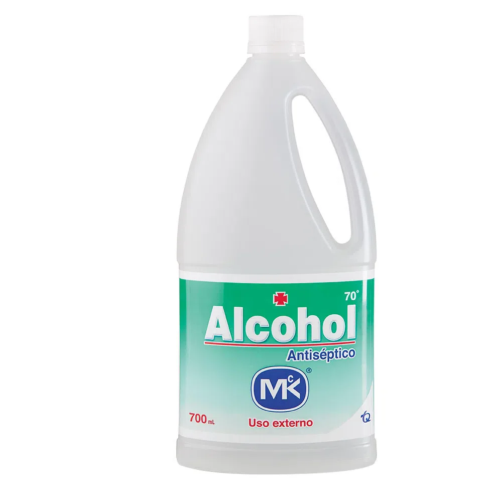

Bienvenido al tu botiquin virtual BotiQAid
BotiQAid es un botiquín inteligente que ayuda a tener un control sobre los medicamentos y herramientas necesarias para prestar los primeros auxilios. Ayudando a que las personas sepan actuar correctamente en momento de emergencia.
Inventario del Botiquín
Aquí encontraras todos los insumos necesarios para prestar los primeros auxilios
Gasas estériles limpias
PAQUETES: 1
CANTIDAD POR PAQUETE: 20 Unidades
Esparadrapo Tela Blanco 4x5 Yardas

PAQUETES: 1
CANTIDAD POR PAQUETE: 1 Unidad
Bajalenguas desechable
PAQUETES: 1
CANTIDAD POR PAQUETE: 20 Unidades
Guantes de Latex

PAQUETES: 1
CANTIDAD POR PAQUETE: 100 Unidades
Venda elástica 2 x 5 yardas

PAQUETES: 1
CANTIDAD POR PAQUETE: 1 Unidad
Venda elástica 3 x 5 yardas
PAQUETES: 1
CANTIDAD POR PAQUETE: 1 Unidad
Venda elástica 5 x 5 yardas 
PAQUETES: 1
CANTIDAD POR PAQUETE: 1 Unidad
Venda de algodón 3 x 5 yardas
PAQUETES: 1
CANTIDAD POR PAQUETE: 1 Unidad
Yodopovidona (jabón quirúrgico)
FRASCO: 1
CANTIDAD POR FRASCO: 120 ml
Solución salina
PAQUETES: 2
CANTIDAD POR PAQUETE: 1 Unidad
Termómetro digital unidad
PAQUETES: 1
CANTIDAD POR PAQUETE: 1 Unidad
Alcohol antiséptico
FRASCO: 1
CANTIDAD POR FRASCO: 275 ml
¿Qué hacer en casos de emergencia?
En caso de que no sepas que hacer puedes guiarte con algunos de los videos que tenemos aquí. No te olvides que lo primordial es llamar las lineas de emergencia de tu ciudad
¿Qué hacer en caso de hemorragia?
Sigue el video o realiza los siguientes pasos
PASO 1 Evalúa la situación: verifica la gravedad de la hemorragia y si la persona está consciente o no.
PASO 2 Controla la hemorragia: Aplica presión directa sobre la herida con un paño limpio o una gasa. Si la sangre empapa el paño, no lo retires, sino coloca otro encima.
PASO 3 Busca ayuda médica: Si la hemorragia no se detiene, es crucial buscar atención médica lo antes posible.
¿Qué hacer en caso de atragantamiento? (Maniobra de Heimlich)
Sigue el video o realiza los siguientes pasos
PASO 1 Pregunta: Averigua si la persona está atragantada. Pregunta si puede hablar, toser o respirar.
PASO 2 Posición: Colócate detrás de la persona, rodeándola por la cintura.
Paso 3 Compresión abdominal: Forma un puño con una mano y colócalo en el centro del abdomen, justo por encima del ombligo. Sujeta el puño con la otra mano y realiza compresiones rápidas y fuertes hacia adentro y hacia arriba.
PASO 4 Repetir: Repite la compresión hasta que el objeto sea expulsado o la persona pierda el conocimiento.
PASO 5 Si pierde el conocimiento: Llama a emergencias y realiza la maniobra de RCP, revisando la boca después de cada serie de compresiones para eliminar el objeto si es visible y se puede retirar con los dedos.
COMO HACER LA MANIOBRA DE REANIMACION PULMONAR (RCP)
PASO 1: Llama a emergencias
PASO 2 Evaluar la situación: Asegúrate de que el área sea segura y que la persona no respira.
PASO 3 Compresiones torácicas: Coloca tus manos sobre el pecho de la víctima y realiza compresiones firme y rápidamente a una profundidad de 5-6 cm y a un ritmo de 100-120 compresiones por minuto.
PASO 4 Ventilaciones boca a boca: Si estás capacitado y la situación lo permite, después de 30 compresiones, da 2 ventilaciones boca a boca. Asegúrate de que el tórax se eleve con cada ventilación.
¿Qué debo hacer ante una reacción alérgica aguda?
Sigue el video o realiza los siguientes pasos
PASO 1 Administra Antihistamínicos: En casos de síntomas leves, se puede administrar un antihistamínico como difenhidramina, siempre y cuando no haya signos de anafilaxia.
PASO 2 Inyección en el Muslo en caso de anafilaxia: La epinefrina debe inyectarse en el centro del lado exterior del muslo, pudiendo hacerlo a través de la ropa en caso de emergencia.
PASO 3 Tiempo de inyección: Sujete el autoinyector durante al menos 2 segundos para asegurar una adecuada administración del medicamento.
PASO 4 Zonas a Evitar: No inyecte en las nalgas, ya que esto puede disminuir la efectividad de la epinefrina.
¿Qué hacer en caso de Quemaduras?
Sigue el video o realiza los siguientes pasos
PASO 1 Primeros Auxilios Inmediatos: En caso de quemaduras, se recomienda enfriar la zona afectada con agua fría durante al menos 10 minutos. Esto ayuda a reducir el daño en la piel y alivia el dolor.
PASO 2 Uso de Compresas Frías: Si no es posible sumergir la quemadura en agua, se pueden aplicar compresas frías o un paño limpio y húmedo para ayudar a calmar la piel.
PASO 3 Consulta Médica: Si la quemadura es grave, o afecta áreas grandes del cuerpo, es fundamental buscar atención médica profesional lo antes posible.
¿Qué hacer en caso de luxación, esguince o fractura?
Sigue el video o realiza los siguientes pasos
PASO 1 Inmovilizacion: No intentar reducir la luxación o fractura. Utilizar una férula improvisada (tablas, periódicos enrollados, cartón) para mantener la extremidad inmóvil. Si es una lesión en la extremidad inferior, no retirar el zapato para evitar movimientos innecesarios. Si es una lesión en la extremidad superior, retirar anillos y pulseras antes de que se produzca inflamación.
PASO 2 Hielo: Aplicar hielo envuelto en una toalla para evitar quemaduras. No aplicar hielo directamente sobre la piel.
PASO 3 Elevavión: Si es una lesión en la extremidad inferior, mantenerla elevada para reducir la hinchazón.
PASO 4 Traslado: Mantener la inmovilización durante el traslado. Informar al personal médico sobre posibles enfermedades, alergias o medicamentos que use la persona.
PASO 5 Evitar: Masajes o aplicación de pomadas en la zona afectada. Intentar reducir la luxación o fractura por uno mismo.
Importante: Si no estás seguro de qué tipo de lesión es, tratarla como si fuera una fractura y trasladar a la persona a un centro de atención médica.
¿Cómo curar heridas correctamente?
Sigue el video o realiza los siguientes pasos
PASO 1 Detener el sangrado: Si hay sangrado, aplica presión directa sobre la herida con una gasa limpia o una tela limpia. Si es posible, eleva la zona herida para reducir el flujo de sangre.
PASO 2 Limpiar la herida: Lávate las manos con jabón y agua antes de limpiar la herida. Enjuaga la herida con abundante agua limpia. Puedes usar una gasa húmeda para limpiar alrededor de la herida, evitando que el jabón entre en ella. Usa una gasa limpia para secar la herida.
PASO 3 Cubrir la herida: Cubre la herida con un apósito estéril. Usa cinta adhesiva para asegurar el apósito, si es necesario.